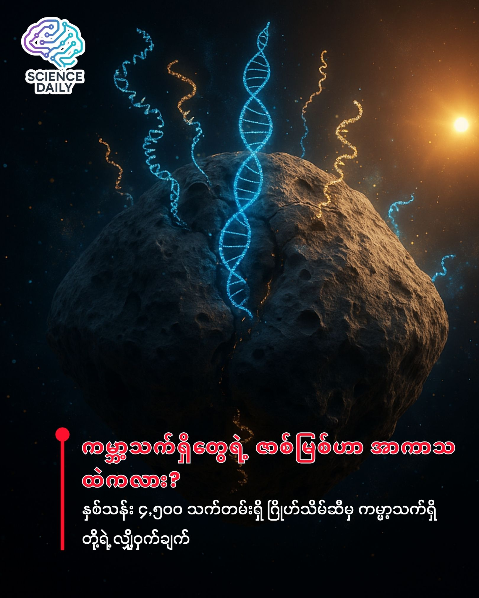

ဂြိုဟ်သိမ် Bennu ပေါ်က အဖြေ
ကမ္ဘာ့သက်ရှိတွေရဲ့ မူလအစဟာ အာကာသထဲက လာတာလား?
 ကမ္ဘာ့သက်ရှိတွေရဲ့ မူလအစဟာ အာကာသထဲက လာတာလား? (ဂြိုဟ်သိမ် Bennu ပေါ်က အဖြေ)
ကမ္ဘာပေါ်မှာ သက်ရှိတွေ ဘယ်လိုစတင်ခဲ့သလဲဆိုတာ တွေးကြည့်ဖူးပါသလား? ဟင်းချက်မယ်ဆိုရင် ပါဝင်ပစ္စည်း (Ingredients) တွေ အကုန်စုံမှ ဟင်းတစ်ခွက်ဖြစ်လာသလိုမျိုး၊ သက်ရှိဖြစ်လာဖို့ဆိုရင်လည်း အခြေခံလိုအပ်တဲ့ ဓာတုဗေဒ ပါဝင်ပစ္စည်းတွေ စုံလင်နေဖို့ လိုပါတယ်။
ဒါဆိုရင် မေးစရာရှိတာက.. အဲ့ဒီ ပါဝင်ပစ္စည်းတွေက ကမ္ဘာပေါ်မှာ အလိုလိုရှိနေတာလား၊ ဒါမှမဟုတ် အာကာသထဲက ဂြိုဟ်သိမ်ဂြိုဟ်မွှားတွေကတဆင့် ရောက်လာတာလား? ဒီမေးခွန်းအတွက် အလွန်အရေးကြီးတဲ့ သဲလွန်စတစ်ခုကို သိပ္ပံပညာရှင်တွေ ရှာဖွေတွေ့ရှိလိုက်ပါပြီ။
အာကာသထဲက လာတဲ့ လက်ဆောင် (OSIRIS-REx ၏ အခန်းကဏ္ဍ)
လွန်ခဲ့တဲ့ (၂) နှစ်လောက်က NASA ရဲ့ OSIRIS-REx အာကာသယာဉ်ဟာ Bennu (ဘဲနူး) လို့ခေါ်တဲ့ ဂြိုဟ်သိမ်တစ်ခုဆီကနေ မြေသားနမူနာ (၁၂၁) ဂရမ်ကို ကမ္ဘာမြေဆီ ပြန်သယ်လာနိုင်ခဲ့ပါတယ်။ ဒါဟာ သာမန် ကျောက်ခဲ၊ သဲခဲတွေ မဟုတ်ပါဘူး။ နေအဖွဲ့အစည်း စတင်မွေးဖွားချိန် လွန်ခဲ့တဲ့ နှစ်သန်းပေါင်း ၄,၅၀၀ လောက်ကတည်းက ရှိနေခဲ့တဲ့ ရှေးဟောင်းပစ္စည်းတွေ ဖြစ်ပါတယ်။
သိပ္ပံပညာရှင်တွေက ဒီနမူနာတွေကို စစ်ဆေးကြည့်တဲ့အခါမှာ သက်ရှိတွေဖြစ်တည်ဖို့ လိုအပ်တဲ့ အစိတ်အပိုင်းအတော်များများကို တွေ့ခဲ့ရပြီးဖြစ်ပါတယ်။ ဒါပေမဲ့ အရေးကြီးတဲ့ ပါဝင်ပစ္စည်း "တစ်ခု" လိုနေခဲ့ပါတယ်။
ပျောက်ဆုံးနေတဲ့ ပါဝင်ပစ္စည်း (The Missing Ingredient)
သက်ရှိတွေရဲ့ ခန္ဓာကိုယ်တည်ဆောက်ပုံကို ကြည့်မယ်ဆိုရင် DNA နဲ့ RNA ဆိုတာ မရှိမဖြစ်ပါပဲ။ သူတို့ဖြစ်တည်ဖို့အတွက် အဓိက အစိတ်အပိုင်း ၃ ခု လိုအပ်ပါတယ်-
Phosphates (ဖော့စဖိတ်များ) Nucleobases (နူကလိယိုဘေ့စ်များ) - မျိုးရိုးဗီဇကုဒ်တွေ ရေးဆွဲတဲ့နေရာ Sugars (သကြားဓာတ်) - အဆောက်အဦတစ်ခုလုံးကို ချိတ်ဆက်ပေးတဲ့ ကျောရိုး
အရင်ကလေ့လာမှုတွေမှာ ပထမနှစ်ခုကို Bennu ဂြိုဟ်သိမ်ပေါ်မှာ တွေ့ခဲ့ပြီးပါပြီ။ အခုနောက်ဆုံးမှာတော့ Tohoku University က သုတေသီ Yoshihiro Furukawa ဦးဆောင်တဲ့ အဖွဲ့က ပျောက်ဆုံးနေတဲ့ တတိယမြောက် အစိတ်အပိုင်းဖြစ်တဲ့ Ribose (ရိုင်ဘို့စ် သကြား) ကို ရှာတွေ့လိုက်ပြီ ဖြစ်ပါတယ်။
ရိုးရိုးရှင်းရှင်း ပြောရရင်တော့ သက်ရှိဇီဝတစ်ခု ဖြစ်လာဖို့ လိုအပ်တဲ့ ပါဝင်ပစ္စည်းအားလုံး (All Ingredients) ဟာ ဒီဂြိုဟ်သိမ်ပေါ်မှာ အစုံအလင် ရှိနေတာကို အတည်ပြုလိုက်နိုင်တာပါပဲ။
ထူးခြားတဲ့ ရှာဖွေတွေ့ရှိမှုများ (Methodology & Discoveries)
ဒီလေ့လာမှုမှာ Ribose သကြားအပြင် အခြားစိတ်ဝင်စားစရာ အချက်တွေကိုပါ တွေ့ခဲ့ရပါတယ်-
Glucose: ကမ္ဘာပေါ်က သက်ရှိတွေအတွက် အင်အားအရင်းအမြစ်ဖြစ်တဲ့ ဂလူးကို့စ်ကိုလည်း တွေ့ရပါတယ်။
Space Gum (အာကာသ ပီကေ): နာဆာက သုတေသီ Scott Sandford နဲ့ အဖွဲ့ဟာ ကျောက်သားနမူနာထဲမှာ ပျော့ပျောင်းပြီး စေးကပ်တဲ့ ပေါ်လီမာ (Polymer) တစ်မျိုးကို တွေ့ခဲ့ပါတယ်။ ဒါဟာ Ammonium Carbamate လို့ခေါ်တဲ့ ဓာတ်ပစ္စည်းကနေ ဖြစ်လာတာပါ။ ဒီအရာက အရင်တုန်းက ပျော့ပေမယ့် အချိန်ကြာလာတာနဲ့အမျှ မာကျောသွားတဲ့ သဘောရှိပါတယ်။
ဒီအချက်တွေက Bennu ဂြိုဟ်သိမ်ရဲ့ မိခင်ဂြိုဟ်ကြီးဟာ တစ်ချိန်တုန်းက ရေနဲ့ အပူချိန်ရှိခဲ့တဲ့ ဂြိုဟ်တစ်ခု ဖြစ်နိုင်တယ်ဆိုတာကို ညွှန်ပြနေပါတယ်။
ဒီသတင်းက အရမ်းကို စိတ်လှုပ်ရှားစရာ ကောင်းပေမယ့် သိပ္ပံပညာရှင်တွေက သတိထားရမယ့် အချက်တွေကိုလည်း ထောက်ပြထားပါတယ်။
သက်ရှိတွေ့တာ မဟုတ်ပါ: ကျွန်တော်တို့ ရှာတွေ့တာက သက်ရှိဖြစ်တည်ဖို့ လိုအပ်တဲ့ "ကုန်ကြမ်း" တွေကိုသာ ဖြစ်ပါတယ်။ ဂြိုဟ်သိမ်ပေါ်မှာ သက်ရှိသတ္တဝါ (သို့) ပိုးမွှားတွေ တွေ့တာ မဟုတ်ပါဘူး။
DNA မဟုတ်သေးပါ: အခုတွေ့တာက RNA အတွက်လိုတဲ့ Ribose သကြားပါ။ DNA အတွက်လိုတဲ့ Deoxyribose ကိုတော့ မတွေ့ရသေးပါဘူး။ ဒါက ဘာကိုပြနေလဲဆိုတော့ ကမ္ဘာ့ဦးအစ သက်ရှိတွေဟာ DNA အခြေပြု မဟုတ်ဘဲ၊ RNA အခြေပြု (RNA World) နဲ့ ရိုးရိုးရှင်းရှင်း စတင်ခဲ့တာ ဖြစ်နိုင်တယ်ဆိုတဲ့ သီအိုရီကို ပိုအားကောင်းစေပါတယ်။
နိဂုံး (Conclusion)
ဒီရှာဖွေတွေ့ရှိမှုက ကျွန်တော်တို့ရဲ့ သမိုင်းကြောင်းကို ပြန်လည်စဉ်းစားစေပါတယ်။ ကမ္ဘာပေါ်က သက်ရှိတွေရဲ့ မူလအစဟာ ဒီမြေကြီးထဲကနေ အလိုလို ပေါ်လာတာ မဟုတ်ဘဲ၊ လွန်ခဲ့တဲ့ နှစ်သန်းပေါင်းများစွာက ကမ္ဘာမြေပေါ်ကို ကျရောက်ခဲ့တဲ့ ဂြိုဟ်သိမ်ဂြိုဟ်မွှားတွေကတဆင့် ပါလာတဲ့ "အာကာသ လက်ဆောင်" တွေ ဖြစ်နေနိုင်ပါတယ်။
နှစ်ပေါင်း ၄.၅ ဘီလီယံ သက်တမ်းရှိတဲ့ Bennu ဂြိုဟ်သိမ်ဟာ အခုချိန်မှာတော့ စကြာဝဠာရဲ့ လျှို့ဝှက်ချက်တွေကို ဖွင့်ဟပြမယ့် ရတနာသိုက်ကြီး တစ်ခု ဖြစ်လာပါပြီ။